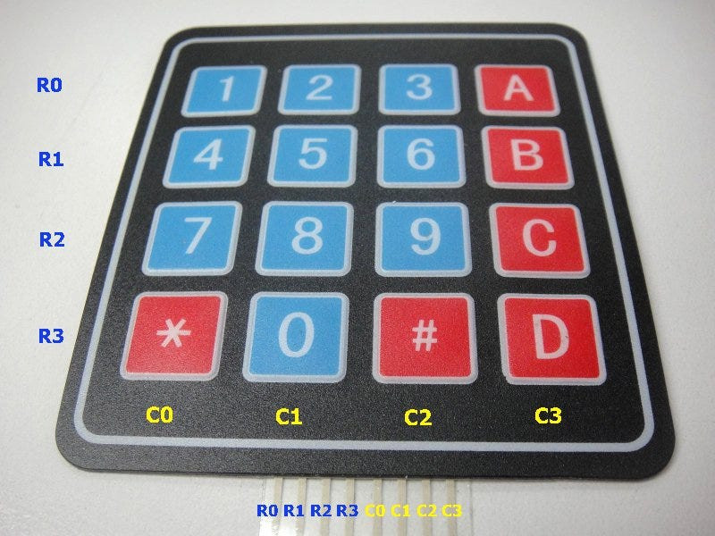
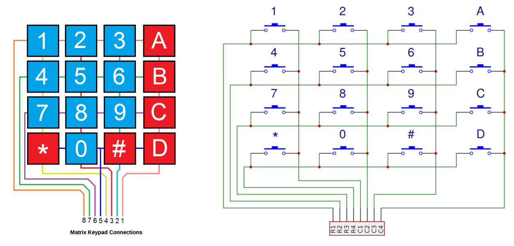
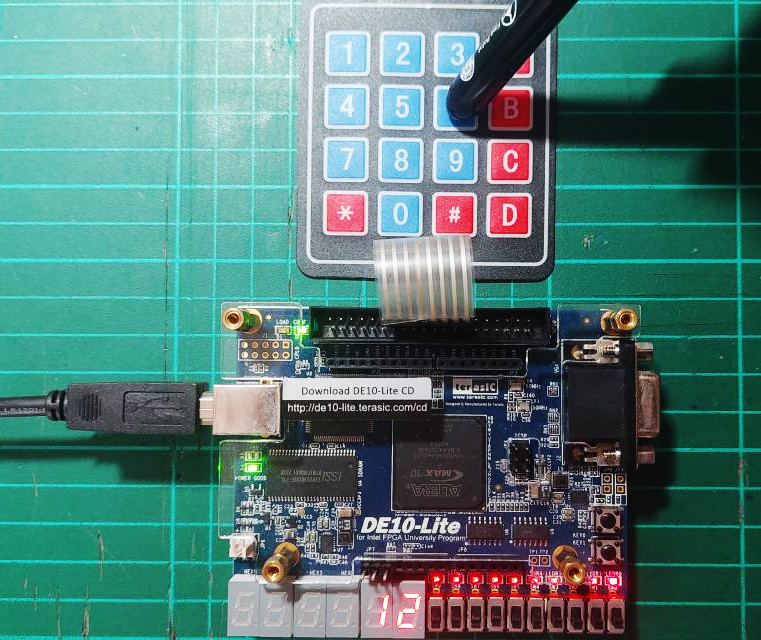
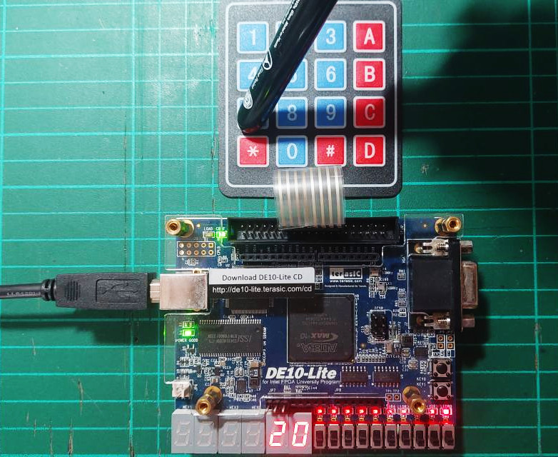
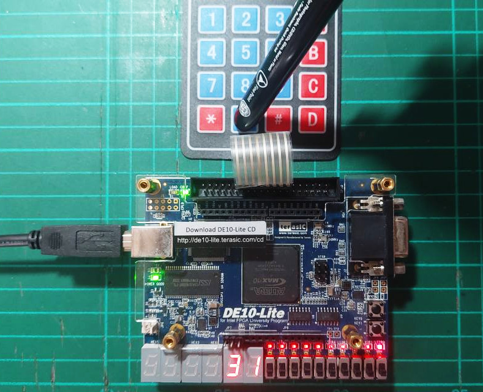

Tutorial: Keypad Interfacing#
Keypad Modules#
A keypad module is a digital input device consisting of an array of push buttons. There are different types of keypads, such as mechanical and membrane keypads.
Key advantages of membrane keypads include:
- The buttons are sealed, making them water-resistant or waterproof.
- The flat surface is easy to clean and resistant to dirt and liquids.
- In simple designs, only one key press is detected at a time.
For example, the I/O pins of a 4x4 keypad module consist of 8 pins:
- 4 pins for the horizontal row signals (Rows:
R0..R3) - 4 pins for the vertical column signals (Columns:
C0..C3)
According to the module's layout, the position R0C0 corresponds to the '1' key,
progressing sequentially to R3C3, which corresponds to the 'D' key.

Figure: 4x4 membrane keypad

Figure: 4x4 keypad matrix structure
Keypad Scanning Methods#
Keypad scanning is all about figuring out if a key is being pressed. This is achieved by checking one row or one column at a time — either method works just fine. The scanning happens repeatedly at a set rate, allowing for constant monitoring of key presses.
There are two common methods for keypad scanning:
-
Column-wire scanning:
- Connect
R0..R3to the digital input pins of the FPGA (or microcontroller), with 4 pull-up resistors (internal or external) connected to these inputs. - Connect
C0..C3to the digital output pins of the FPGA.
- Connect
-
Row-wise scanning:
- Connect
C0..C3to the digital input pins with pull-up resistors. - Connect
R0..R3to the digital output pins of the FPGA.
- Connect
In this tutorial, the column-wise scanning method is chosen for connecting circuits and detecting keypresses.
- During scanning, each output column is pulled low one at a time, while all other columns remain high. If a key in that column is pressed, it will pull the corresponding row line low, which can then be detected.
- The scan starts from column
C0and proceeds in order toC3, completing one full cycle. - For each column, the output values to
C0..C3are set such that the column being scanned is set to 0 (Low), while all other columns are set to 1 (High). Then the input values fromR0..R3are read (4 bits in total; these can be read one pin at a time). - The output pattern for
C0..C3will cycle as follows:0111→1011→1101→1110 - If any input pin
R0..R3reads a '0', it means a key has been pressed at the intersection of the currently active column and that particular row. This row-column pair is then used to identify one of the 16 possible keys. - If no key is detected during one complete scan cycle, the valid output is LOW.
VHDL Demo Code#
This VHDL code below shows how to scan a 4x4 keypad and
show the valid key value using two digits of 7-segment display
(HEX0 for the column index and HEX1 for the row index).
VHDL Code Listing
-- File: keypad_scan.vhd
-- Keypad layout:
-- R0C0 R0C1 R0C2 R0C3
-- R1C0 R1C1 R1C2 R1C3
-- R2C0 R2C1 R2C2 R2C3
-- R3C0 R3C1 R3C2 R3C3
LIBRARY IEEE;
USE IEEE.STD_LOGIC_1164.ALL;
USE IEEE.NUMERIC_STD.ALL;
ENTITY keypad_scan IS
GENERIC (
CLK_FREQ_HZ : INTEGER := 50000000;
SCAN_RATE : INTEGER := 500
);
PORT (
CLK : IN STD_LOGIC; -- Clock input
RST_N : IN STD_LOGIC; -- Active-low asynchronous reset
ROWS : IN STD_LOGIC_VECTOR(3 DOWNTO 0); -- Row inputs
COLS : OUT STD_LOGIC_VECTOR(3 DOWNTO 0); -- Column outputs
HEX0 : OUT STD_LOGIC_VECTOR(7 DOWNTO 0); -- Detected row index
HEX1 : OUT STD_LOGIC_VECTOR(7 DOWNTO 0); -- Detected column index
VALID : OUT STD_LOGIC -- Valid key status
);
END keypad_scan;
ARCHITECTURE behavioral OF keypad_scan IS
CONSTANT COUNT_MAX : INTEGER := CLK_FREQ_HZ / SCAN_RATE;
SIGNAL clk_cnt : INTEGER RANGE 0 TO COUNT_MAX - 1 := 0;
SIGNAL clk_en : STD_LOGIC := '0';
SIGNAL col_index : INTEGER RANGE 0 TO 3 := 0;
SIGNAL col_reg : STD_LOGIC_VECTOR(3 DOWNTO 0) := "1110";
SIGNAL key_row : INTEGER RANGE 0 TO 15 := 0;
SIGNAL key_col : INTEGER RANGE 0 TO 15 := 0;
SIGNAL key_valid : STD_LOGIC := '0';
FUNCTION bcd2seg7(bcd : INTEGER) RETURN STD_LOGIC_VECTOR IS
VARIABLE seg : STD_LOGIC_VECTOR(6 DOWNTO 0);
BEGIN
CASE bcd IS
WHEN 0 => seg := "1000000"; -- 0
WHEN 1 => seg := "1111001"; -- 1
WHEN 2 => seg := "0100100"; -- 2
WHEN 3 => seg := "0110000"; -- 3
WHEN 4 => seg := "0011001"; -- 4
WHEN 5 => seg := "0010010"; -- 5
WHEN 6 => seg := "0000010"; -- 6
WHEN 7 => seg := "1111000"; -- 7
WHEN 8 => seg := "0000000"; -- 8
WHEN 9 => seg := "0010000"; -- 9
WHEN OTHERS => seg := "1111111"; -- blank
END CASE;
RETURN seg;
END bcd2seg7;
BEGIN
-- Clock enable generator
clk_en_proc : PROCESS (CLK, RST_N)
BEGIN
IF RST_N = '0' THEN
clk_cnt <= 0;
clk_en <= '0';
ELSIF rising_edge(CLK) THEN
IF clk_cnt = COUNT_MAX - 1 THEN
clk_cnt <= 0;
clk_en <= '1';
ELSE
clk_cnt <= clk_cnt + 1;
clk_en <= '0';
END IF;
END IF;
END PROCESS;
-- Column scan pattern generator
cols_scan_proc : PROCESS (CLK, RST_N)
VARIABLE next_col_index : INTEGER RANGE 0 TO 3;
BEGIN
IF RST_N = '0' THEN
col_index <= 0;
col_reg <= "1110";
ELSIF rising_edge(CLK) THEN
IF clk_en = '1' THEN
next_col_index := (col_index + 1) MOD 4;
col_index <= next_col_index;
CASE next_col_index IS
WHEN 0 => col_reg <= "1110";
WHEN 1 => col_reg <= "1101";
WHEN 2 => col_reg <= "1011";
WHEN 3 => col_reg <= "0111";
WHEN OTHERS => col_reg <= "1111";
END CASE;
END IF;
END IF;
END PROCESS;
-- Row read and key decode
read_rows_proc : PROCESS (CLK, RST_N)
BEGIN
IF RST_N = '0' THEN
key_row <= 0;
key_col <= 0;
key_valid <= '0';
ELSIF rising_edge(CLK) THEN
IF clk_en = '1' THEN
key_row <= 0;
key_col <= col_index;
key_valid <= '1';
CASE ROWS IS
WHEN "1110" => key_row <= 0;
WHEN "1101" => key_row <= 1;
WHEN "1011" => key_row <= 2;
WHEN "0111" => key_row <= 3;
WHEN OTHERS => key_valid <= '0';
END CASE;
END IF;
END IF;
END PROCESS;
-- Concurrent output signal assignments
COLS <= col_reg;
VALID <= key_valid;
HEX1 <= '1' & bcd2seg7(key_row) WHEN key_valid = '1' ELSE
(OTHERS => '1');
HEX0 <= '1' & bcd2seg7(key_col) WHEN key_valid = '1' ELSE
(OTHERS => '1');
END behavioral;
A Tcl script for MAX10 Lite pin assignments is also provided as an example.
#============================================================
# FPGA assignments
#============================================================
#set_global_assignment -name FAMILY "MAX 10 FPGA"
#set_global_assignment -name DEVICE 10M50DAF484C7G
#============================================================
# CLOCK
#============================================================
set_instance_assignment -name IO_STANDARD "3.3-V LVTTL" -to CLK
set_location_assignment PIN_P11 -to CLK
#============================================================
# PUSH BUTTONS
#============================================================
set_instance_assignment -name IO_STANDARD "3.3 V SCHMITT TRIGGER" -to RST_N
set_location_assignment PIN_B8 -to RST_N
#============================================================
# LEDS
#============================================================
foreach i {0 1 2 3 4 5 6 7} {
set_instance_assignment -name IO_STANDARD "3.3-V LVTTL" -to KEY[$i]
}
set_instance_assignment -name IO_STANDARD "3.3-V LVTTL" -to VALID
set_location_assignment PIN_A8 -to VALID
#============================================================
# 7-segments
#============================================================
foreach i {0 1 2 3 4 5 6 7} {
set_instance_assignment -name IO_STANDARD "3.3-V LVTTL" -to HEX0[$i]
set_instance_assignment -name IO_STANDARD "3.3-V LVTTL" -to HEX1[$i]
}
set_location_assignment PIN_C14 -to HEX0[0]
set_location_assignment PIN_E15 -to HEX0[1]
set_location_assignment PIN_C15 -to HEX0[2]
set_location_assignment PIN_C16 -to HEX0[3]
set_location_assignment PIN_E16 -to HEX0[4]
set_location_assignment PIN_D17 -to HEX0[5]
set_location_assignment PIN_C17 -to HEX0[6]
set_location_assignment PIN_D15 -to HEX0[7]
set_location_assignment PIN_C18 -to HEX1[0]
set_location_assignment PIN_D18 -to HEX1[1]
set_location_assignment PIN_E18 -to HEX1[2]
set_location_assignment PIN_B16 -to HEX1[3]
set_location_assignment PIN_A17 -to HEX1[4]
set_location_assignment PIN_A18 -to HEX1[5]
set_location_assignment PIN_B17 -to HEX1[6]
set_location_assignment PIN_A16 -to HEX1[7]
#============================================================
# GPIOs
#============================================================
foreach i {0 1 2 3 } {
set_instance_assignment -name IO_STANDARD "3.3-V LVTTL" -to COLS[$i]
set_instance_assignment -name IO_STANDARD "3.3-V LVTTL" -to ROWS[$i]
set_instance_assignment -name WEAK_PULL_UP_RESISTOR ON -to ROWS[$i]
}
set_location_assignment PIN_AA15 -to ROWS[0]
set_location_assignment PIN_W13 -to ROWS[1]
set_location_assignment PIN_AB13 -to ROWS[2]
set_location_assignment PIN_Y11 -to ROWS[3]
set_location_assignment PIN_W11 -to COLS[0]
set_location_assignment PIN_AA10 -to COLS[1]
set_location_assignment PIN_Y8 -to COLS[2]
set_location_assignment PIN_Y7 -to COLS[3]
Note:
- For the
ROWS[3..0]inputs, the internal (weak) pullup resistors inside the MAX10 FPGA are enabled for each of these pins, using the following Tcl command:
set_instance_assignment -name WEAK_PULL_UP_RESISTOR ON -to ROWS[$i]
The following photos show the keypad_scan design being tested on the MAX10 Lite FPGA board.

Figure: Key pressed at R1C2

Figure: Key pressed at R2C0

Figure: Key pressed at R3C1
Coding Exercise#
- Read a number from the 4x4 keypad and compare it with a predefined secret 6-digit PIN.
- The number should consist of up to 6 digits, ranging from 0 to 9.
- Each time a valid digit is pressed, update the 7-segment display to reflect the current input.
- To submit the entered number, press the
#key. - If the entered number matches the secret PIN, turn on the
LED.
Otherwise, keep theLEDturned off.
This work is licensed under a Creative Commons Attribution-ShareAlike 4.0 International License.
Created: 2025-06-11 | Last Updated: 2025-06-11